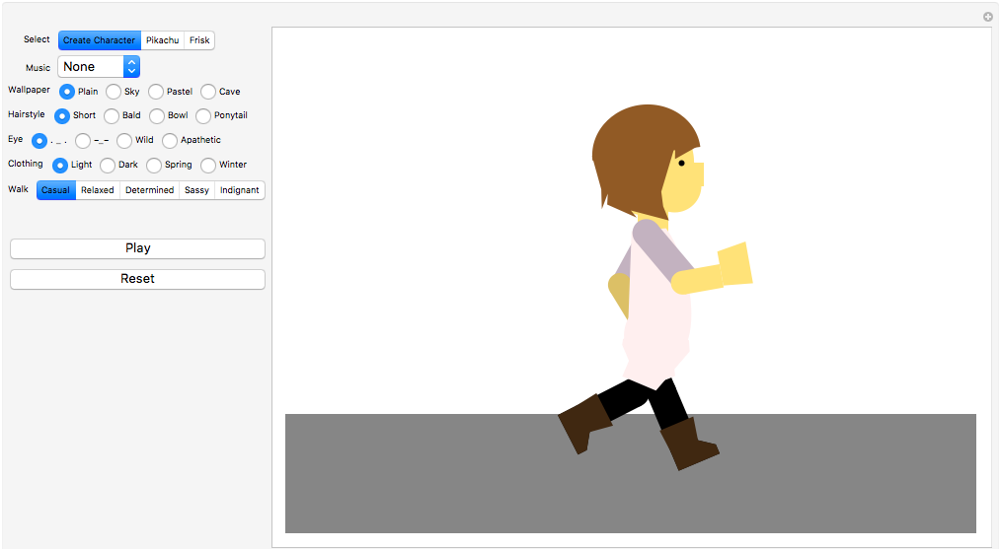
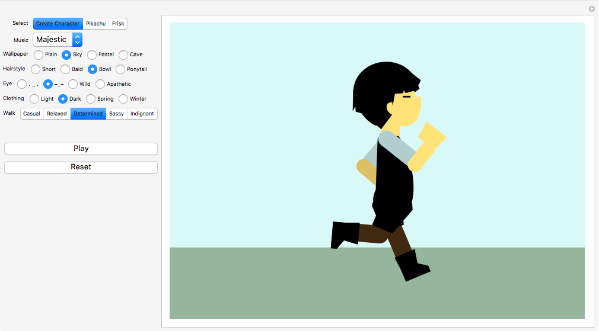
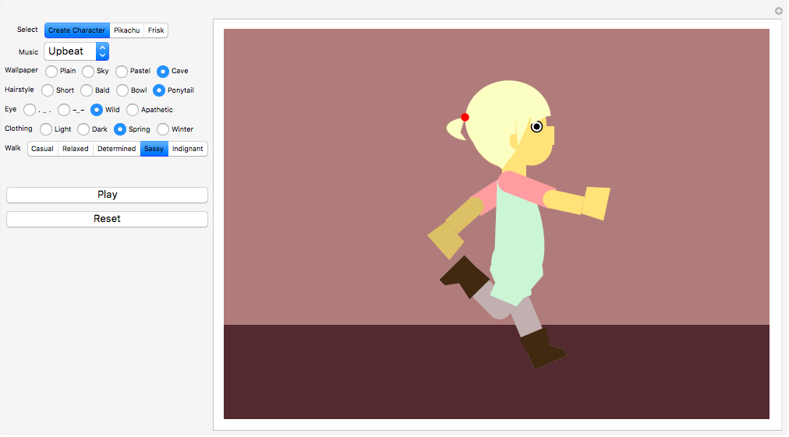
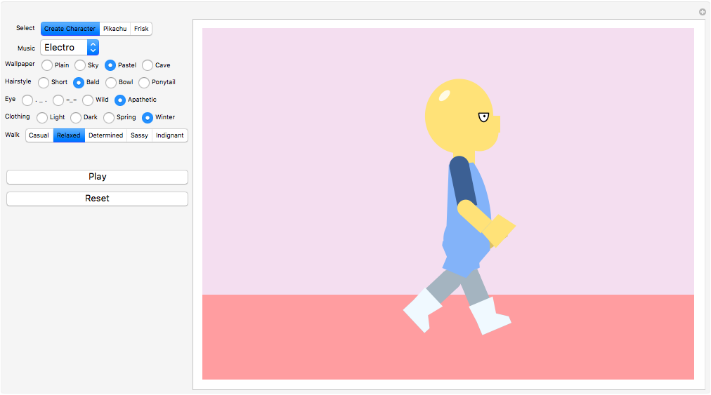

WALKINGCYCLE.
MATHEMATICA DEMONSTRATION
PART 1: Created demonstration comparing animation by traditional frame-by-frame drawing vs. mathematics and parametric curves
DESCRIPTION
Mathematica demonstration of walking animation, first as used in traditional art by illustrating each key frame, then using mathematics to translate the walking figure along a curve.
OPTIONS
- View separate frames individually
- Play entire animated walking cycle
- See how number of frames affects fluidity of animation
- See how using translations can animate a variety of different figures




GITHUB
PART 2: Created fun customizable version of the walking figure
DESCRIPTION
Mathematica demonstration of walking animation, using figure with customizable graphics and gait that walks in sync to the beat of a selected song. User can change song, wallpaper, hairstyle, eye, clothing, and gait.